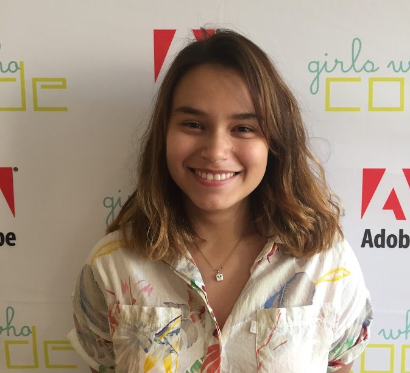
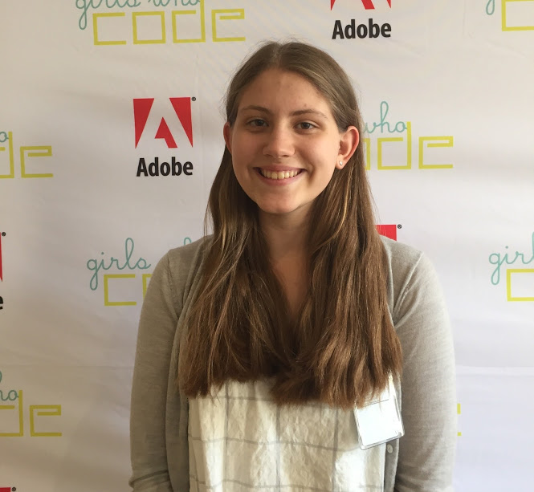
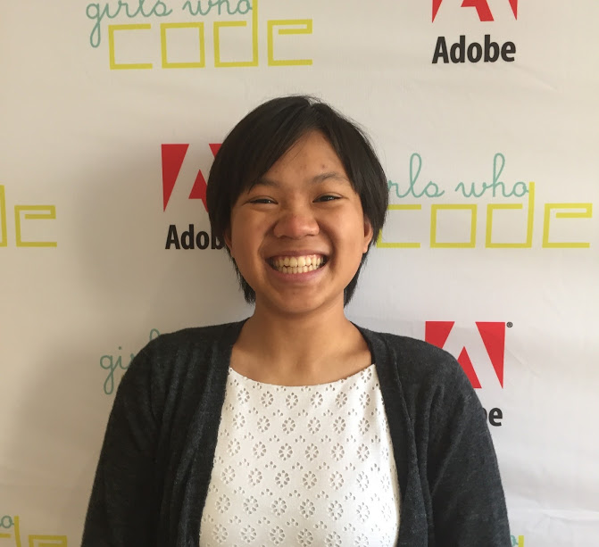
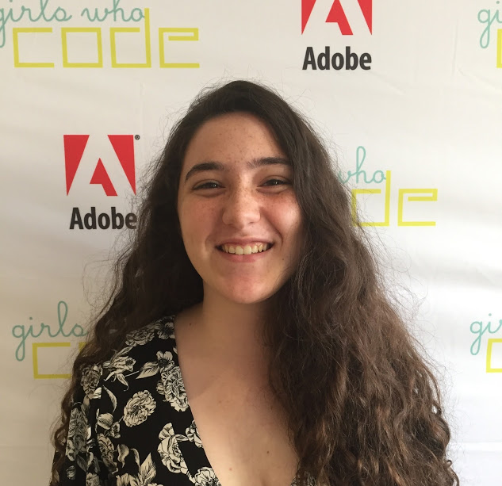

THE TEAM
We love food
We are YumTime and in our similar love for food we have banded together with righteousness in our hearts. We all saw a problem. People all around the country are struggling to find food to make at home. So we decided to create a website that would be able to help people who wanted to make food at home. Using our website people can find all kinds of food recipes for people on special diets and people who have allergies. YumTime's mission is to feed the people of this world and hopefully one day we will be able to accomplish that.
Kylie

Hi I am Kylie I work on frontend development (HTML and the CSS) of this website. I am 16 years old and I live in New Jersey. I am currently a Junior at Dwight Morrow High School
Grace

Hi! My name is Grace Gonzalez and I am 16 years old. I worked on the backend development of the website specifically the recipe maker. I am a Junior at Stanford Online High School and I live in Pennsylvania!
Jacqueline

My name is Jacqueline and I mostly worked on frontend development, but also helped out with some of the backend. I am a rising Junior at Watchung Hills Regional High School and I live in New Jersey.
Chloe

I am Chloe I worked primarily on the frontend development of Yumtime. I am 16 years old and I am a Junior at Bloomfield High School in New Jersey.
GWC

Girls Who Code is a program that teaches young women how to code over the course of 7 weeks. We are also taught the importance of the sisterhood and being open and honest with each other. This isn't just all tech and code, we have had a very fun time going on field trips and meeting new people. At times it is very stressful but the people we work with make it a million times easier and kinder. We would like to personally thank Noha, Sapna, Clarisse, and Kristen for being the best teachers we could ever hope to have. Thank you so much!